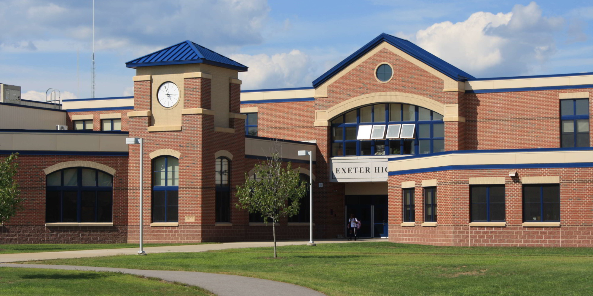

PRASANTHI VIDYA BHAVAN Schools are located in Erode city,
providing a peaceful and accessible setting for learning. Surrounded by a supportive community,
our school offers a safe and welcoming environment where students can grow academically and personally.
- Unique open school design
- Well-equipped, IT-enabled classrooms with multimedia projectors
- State-of-the-art Computer, Physics, Chemistry, Biology and Mathematics laboratories
- Multipurpose Auditorium
- Special Activity rooms for Art, Music (Western & Indian), Dance, Drama and Yoga
- A modern Centre for Performing Arts
- Purpose-built play areas for pre-primary and primary
- Sporting facilities: Basketball, Tennis, Table-tennis, Badminton, Cricket and Judo
- AstroTurf football field
- Medical Centre with qualified nurses and a doctor
- Learning Centre with 38,200 books, 40 journals and magazines, 1600 multimedia (CD/ DVD/Audio Cassettes), and 16 online databases
- Wi-Fi enabled campus
- Cafeteria: Ultra-modern kitchen and two dining halls
- Energy conservation initiatives like LED lighting, air-conditioning timetable, solar-powered water heaters; water conservation efforts; waste-paper management
Safe campus with modern security systems